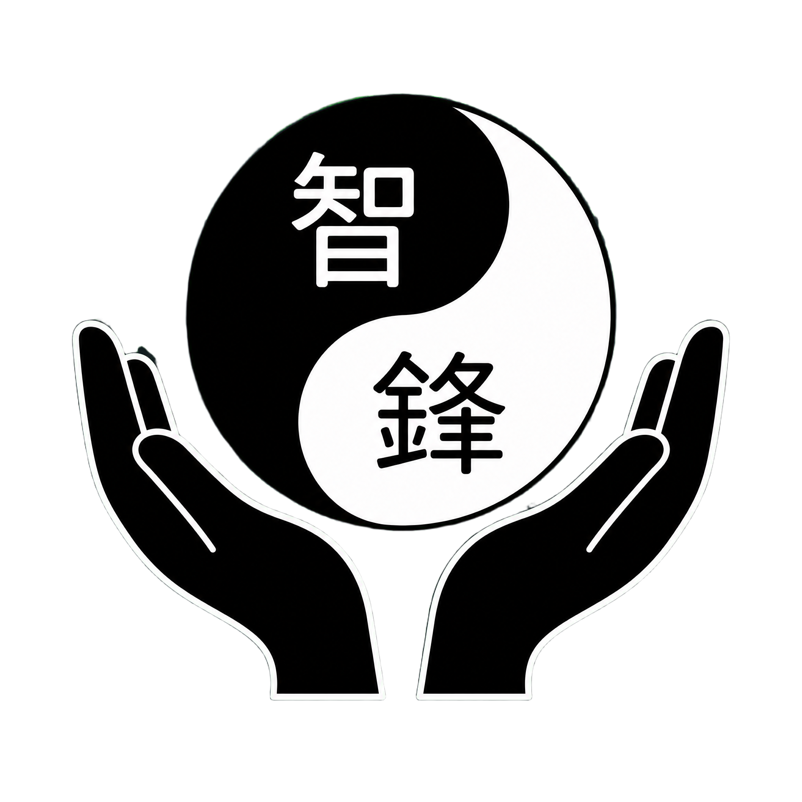

關於我們
智鋒中醫以「細心觀察、溫和調理、長期保健」為核心理念，提供兼顧舒適與實用的中醫手法服務。
經驗分享
多年深耕於手法調理與保健諮詢，重視個別差異與生活環境。
服務態度
以清楚說明與貼心陪伴，讓每位來訪者都能安心了解自己的狀況。
保養觀念
除了現場調理，也提供日常作息與活動習慣的建議，讓改善更穩定。
我們的服務精神
每一次調理都以舒適、安全、可持續為前提，陪您一起建立更穩定的健康習慣。


智鋒中醫智鋒中醫以「細心觀察、溫和調理、長期保健」為核心理念，提供兼顧舒適與實用的中醫手法服務。
多年深耕於手法調理與保健諮詢，重視個別差異與生活環境。
以清楚說明與貼心陪伴，讓每位來訪者都能安心了解自己的狀況。
除了現場調理，也提供日常作息與活動習慣的建議，讓改善更穩定。
每一次調理都以舒適、安全、可持續為前提，陪您一起建立更穩定的健康習慣。